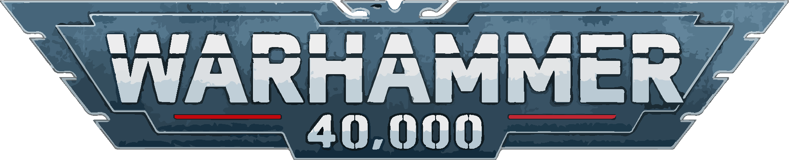
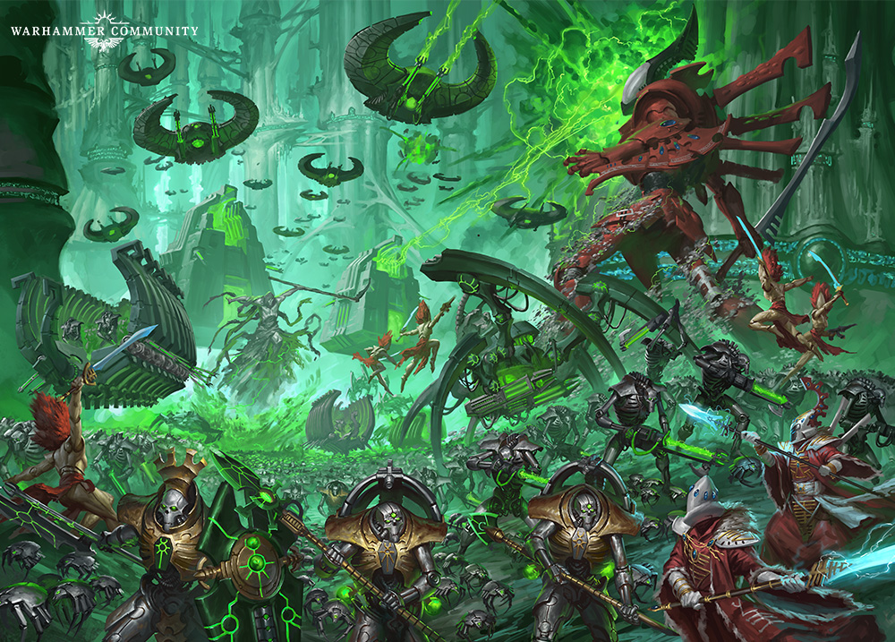
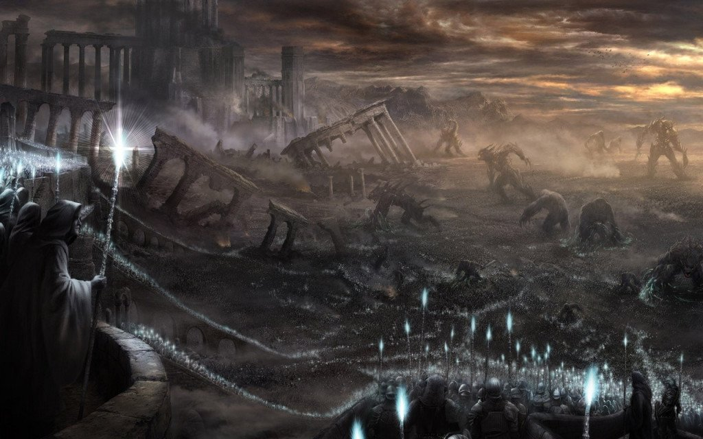
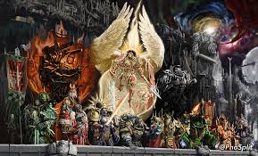
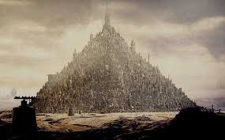

⚔️ Warhammer 40.000 ⚔️
En el oscuro futuro del 41º Milenio, solo hay guerra. En este apartado podras conocer parte de la extensa historia que abarca el universo de warhammer 40k, esperamos sea de tu agrado.
Introducción
Warhammer 40,000 es un universo de ciencia ficción oscura y despiadada, creado por Games Workshop. La acción transcurre en el 41º Milenio, donde la humanidad lucha por sobrevivir en una galaxia sumida en la guerra eterna.
El Imperio de la Humanidad, gobernado por el místico Emperador de la Humanidad (actualmente postrado en el Trono Dorado tras ser herido por su hijo traidor Horus), se enfrenta a enemigos por todas partes: demonios del Caos, alienígenas devoradores de mundos (como los Tiránidos o los T'au), Orkos sedientos de pelea, Eldars decadentes y los Necrones de tecnología ancestral.
Los Marines Espaciales (Astartes) son los guerreros de élite del Imperio, creados a partir de 20 legiones originales. Nueve de ellas traicionaron al Emperador durante la Herejía de Horus, dando origen a las fuerzas del Caos. Ahora, en el presente del lore, el Primarca Roboute Guilliman ha regresado para liderar lo que queda de la humanidad en una cruzada desesperada.

La Era de los Dioses (antes del 1º Milenio)
Los Ancestrales (Old Ones), una raza reptiliana ultratecnológica, dominan la galaxia. Crean a los Eldar, los Korks (proto-Orkos) y otras especies para que les sirvan. Sus enemigos, los Necrontyr (humanoides de piel metálica), hacen un pacto con entidades devoradoras de estrellas llamadas C'tan, transformándose en los Necrones inmortales. Estalla la Guerra del Cielo. Los Ancestrales son aniquilados. Los Necrones, tras ganar, traicionan y fragmentan a los C'tan, y luego entran en letargo durante 60 millones de años.

La Era Dorada de la Humanidad (15º al 25º Milenio)
La humanidad se expande por la galaxia gracias a la tecnología del Motor de Disformidad (viaje interestelar). Nace la Federación Humana. Se crean los Hombres de Piedra (inteligencias artificiales básicas) y los Hombres de Hierro (IA avanzadas). Todo es prosperidad y ciencia.

La Era de los Conflictos (25º al 30º Milenio)
Las Inteligencias Artificiales (Hombres de Hierro) se rebelan contra sus creadores. Guerra civil apocalíptica. La humanidad casi se extingue. La Disformidad se vuelve turbulenta por el nacimiento de Slaanesh, aislando los mundos humanos entre sí. Caos, guerras y colapso total.

La Caída de los Eldar (30º Milenio)
Los Eldar, aburridos y arrogantes tras millones de años de dominio, se entregan al hedonismo más extremo. Sus depravaciones acumuladas en la Disformidad cobran vida y nace Slaanesh, el dios del Caos del exceso. La explosión psíquica devora el 99% de los Eldar y abre la Cicatriz del Maelstrom (Eye of Terror). Los Eldar sobrevivientes huyen en astronaves mundo (Craftworlds) o se refugian en la telaraña (Drukhari).

El Emperador y la Unificación de Terra (30º Milenio)
En la Tierra devastada por la guerra, un ser inmortal conocido como el Emperador de la Humanidad emerge de las sombras. Con sus Custodes y los primeros Marines Espaciales (Astartes) creados a partir de su propio ADN, conquista todo el planeta y luego la Luna y Marte. Alianza con el Mechanicum de Marte.

La Gran Cruzada y la creación de los Primarcas (30º Milenio)
El Emperador crea 20 hijos genéticamente perfectos: los Primarcas. Pero los dioses del Caos los dispersan por la galaxia cuando son bebés. El Emperador recupera a cada uno y les da el mando de sus propias Legiones de Marines Espaciales (20 legiones, cada una de unos 100.000 guerreros). Lanzan la Gran Cruzada para reunificar toda la humanidad bajo el Imperio.

La Herejía de Horus (005-014 del 31º Milenio)
Horus Lupercal, el Primarca más querido por el Emperador (Lobos Lunares), es corrompido por los dioses del Caos mientras se recupera de una herida. Manipula a otros Primarcas para rebelarse. La mitad de las legiones se vuelven traidoras. Guerra civil galáctica. El Emperador regresa a Terra para la batalla final. Horus mata a Sanguinius (Ángeles Sangrientos) y hiere mortalmente al Emperador, pero el Emperador destruye el alma de Horus. El Emperador es puesto en el Trono Dorado, un mecanismo que mantiene su cuerpo medio vivo y alimenta el faro astronómico. Los leales sobreviven (Ultramarines, Lobos Espaciales, Puños Imperiales, etc.). Los traidores huyen al Ojo del Terror.s

El Imperio en decadencia (31º al 40º Milenio)
El Imperio se vuelve teocrático y ultraconservador. La Inquisición caza herejes. Los Marines Espaciales se fragmentan en Capítulos de 1.000 guerreros por el Códex Astartes de Guilliman. Aparecen nuevas amenazas: los Tiránidos (mente colmena que devora mundos), los T'au (raza joven tecnológica con el bien mayor), los Necrones despiertan de sus tumbas, y los Orkos se multiplican. Caos lanza 13 Cruzadas Negras.

La Caída de Cadia y la Gran Fisura (41º Milenio)
Abaddon el Saqueador (sucesor de Horus) lanza la 13ª Cruzada Negra. Destruye el mundo fortaleza de Cadia haciendo caer una nave estación espacial. La protección que contenía al Ojo del Terror colapsa. Nace la Cicatriz de la Herejía, una fisura disforme que parte la galaxia en dos. Mitad Imperio queda a oscuras sin el faro astronómico.

Era Indomitus y el regreso de Guilliman (finales del 41º Milenio - actualidad)
Los sacerdotes del Trono Dorado resucitan a Roboute Guilliman (Primarca de los Ultramarines), quien estaba en un campo de estasis desde la Herejía. Guilliman se convierte en Lord Regente del Imperio. Crea a los Marines Primaris (Astartes mejorados). Lanza la Cruzada Indomitus para retomar los mundos perdidos. Guilliman se enfrenta a los dioses del Caos y descubre que el Emperador ya no es solo un hombre, sino un dios en potencia dentro de la Disformidad. El Imperio sigue en guerra eterna.